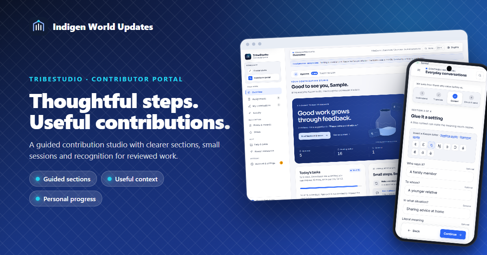
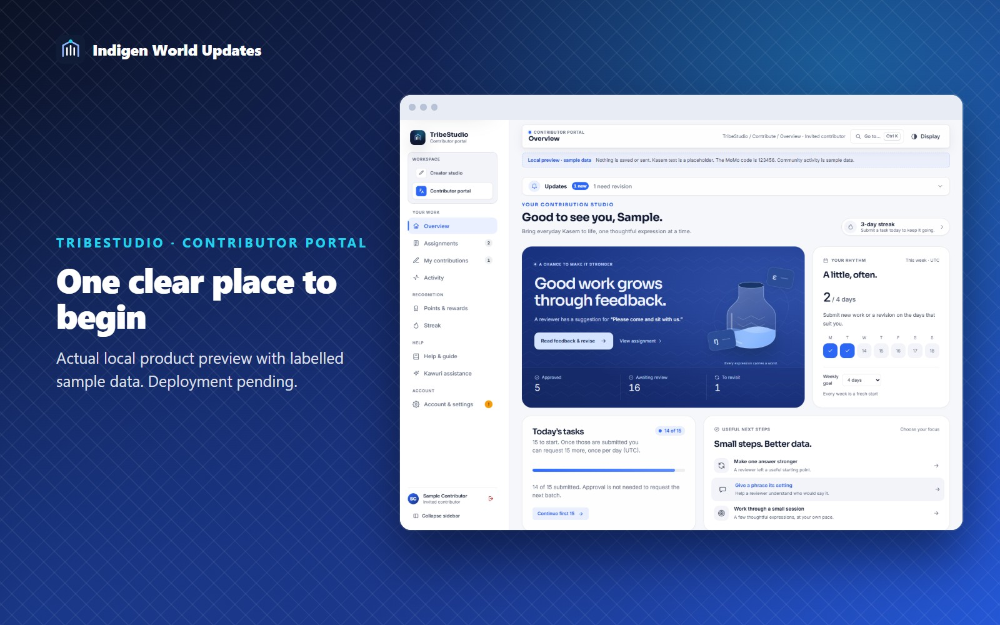
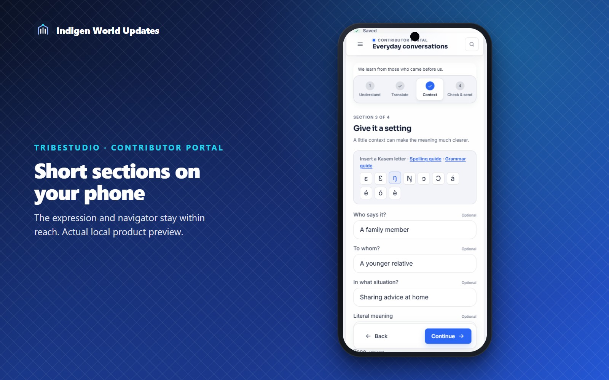
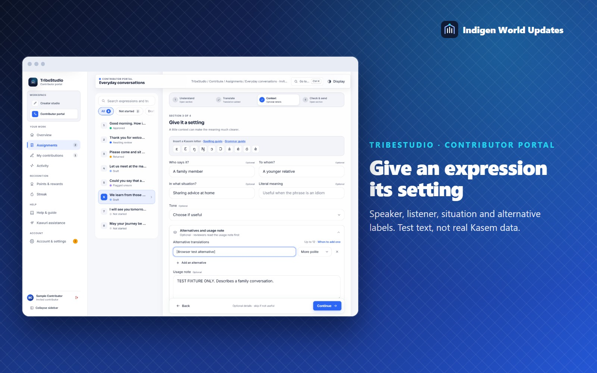
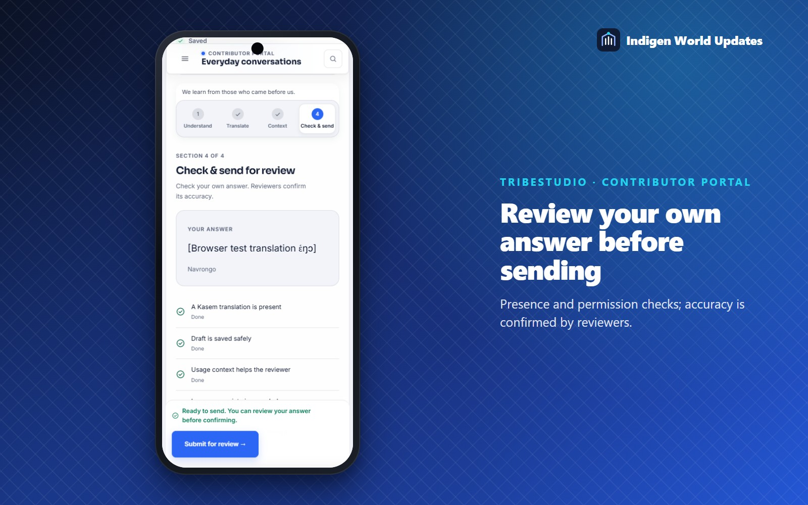

Release status: This contributor portal redesign is implemented and checked locally. Production deployment is pending. The images show the actual portal with clearly labelled sample data.

Good language data comes from people who understand the expressions they share. We have redesigned the invited contributor portal in TribeStudio to make that work easier to follow, easier to pause, and easier to improve after review.
The home screen brings your next expression, participation goal, daily work and review progress into one arranged workspace. Returned work stays a priority, so a reviewer’s useful feedback is easy to find. An animated collection vessel reflects approved work, while pending submissions have their own count.

The editor now follows Understand, Translate, Context, and Check & send. You can move between the sections freely. On a phone, the expression and section navigator stay within reach while you work.
Drafts still save as you type. Recovery copies now include the new context fields and alternative labels, so an interrupted session can preserve more than the main translation. Saving failures keep your work visible and offer a retry.

Optional prompts ask who says an expression, to whom, and in what situation. You can record its language variety, tone and literal meaning, and label an alternative as more polite, informal, regional or carrying a different emphasis. These details travel with the contribution to review and the existing publication workflow.
If you are unsure, you can record why and move on with your draft kept private. Before sending, a checklist shows missing translation, save or sharing-permission steps separately from optional context suggestions. Duplicate hints help identify repeated wording; reviewers still decide whether a variant is distinct.

You can choose sessions of three or five expressions, with a clear stopping point after successful submissions. The existing daily allocation remains fifteen tasks, with one additional fifteen-task request when eligible.
A personal weekly participation goal gives you a fresh start each Monday. New submissions and revisions count toward participation. Private badges recognise accepted contributions, useful context and successful revisions using visible criteria. Badges do not create spendable points; points and rewards continue through the existing review and finance system.
A short practice exercise teaches useful context without adding training or collection records. Review counts show the sample sizes behind recent progress, and a community card can show an administrator’s shared daily approval target.

The studio follows Indigen World’s shared blue palette in light and dark modes, including its navigation, progress, recognition and animated collection vessel.
The redesign includes staged card entrances, moving vessel water, smooth progress changes, a sliding section navigator and brief milestone celebrations. You can turn celebrations off, and the existing animation and reduced-motion choices remain effective.
This update is for active invited expression contributors. Production availability depends on deploying the matching backend and TribeStudio release, followed by a signed-in check. The article and sharing copy are prepared for Chinedum to publish after that release is confirmed.